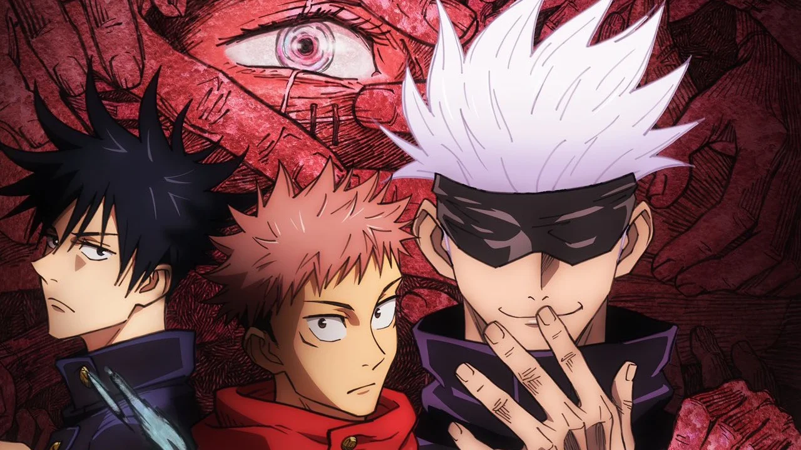

Ted Lasso
Ted Lasso tells the story of a kind and well-intentioned American coach who is brought in to rescue a fictional Premiership football team AFC Richmond - despite a total lack of experience. "I have never coached the sport that you folks call football, at any level," he says during a press conference in the opening episode. "Heck, you could fill two internets with what I don't know about football." But something else Ted doesn't know is he has been hired by the club's owner Rebecca Welton (played by Waddingham) precisely because she wants the team to fail, in an effort to spite her former husband. Ted's unconventional coaching style and relentless optimism takes some getting used to for many of the team's bad-tempered players, with some hilarious consequences. It is, fundamentally, a classic culture-clash comedy. We follow Ted as he grapples with British sarcasm and cynicism, while also slowly but surely winning over those he encounters. Ted Lasso has arguably done the same thing with TV audiences, and instead of aiming only at football fans, the show follows the Friday Night Lights model of using the sport to explore friendships, relationships and being part of a team.
Back To TopMy Hero Academia
The appearance of "quirks," newly discovered super powers, has been steadily increasing over the years, with 80 percent of humanity possessing various abilities from manipulation of elements to shape-shifting etc. The 20 percent of mankind who do not possess a power are called "quirkless", and are usually looked down on upon the supernatural community. Academies across the globe train their students to learn to fight crime with their powers. Izuku Midoriya, a boy born without any powers, dreams of being able to become a super hero too, but gets bullied for his unrealistic dreams. One day, his fate changes in an unexpected meeting with the no.1 hero all might, and he is given the chance to become his successor and inherent one for all, a quirk with a dark history, which is passed down from successor to successor, who cultivates it with their own power and passes it on, to defeat it's brother, all for one.
Back To TopShameless
Watch the Irish American family the Gallaghers dealing with their alcoholic father Frank. Fiona, the eldest daughter, takes the role of the parent to her five brothers and sisters. Lip, Ian, Debbie, Carl, and Liam deal with life on the South Side of Chicago. Fiona balances her sex life and raising her siblings. Every episode is another crazy situation that one or more of the Gallagher six get into. Watch them grow and learn how to make their way in life with what little they have.
Back To TopThe Bear
The Bear was an unexpected smash of Summer 2022. Some of the initial fervor was fueled by the Chicago return of Jeremy Allen White after the ten-year run of Shameless. However, unlike Shameless, which was mostly filmed in LA, The Bear is all about Chicago. The show follows White’s Carmy Berzatto, an award-winning chef. Carmy’s love of food extends beyond an Italian heritage to a greasy spoon Italian beef joint that has been in his family for years. Despite his overwhelming desire to work there, Carmy’s brother Michael (John Bernthal) refuses to let him. This core rejection drives Carmy’s ambition in the kitchen. He trains under an abusive executive chef (Joel McHale), adding to his conflation of love and pain as it relates to cooking. His life falls apart after his brother commits suicide and inexplicably leaves him the business. Carmy quits his fine dining job in New York to return to Chicago to keep The Original Beef of Chicagoland (known simply as "The Beef") alive. To call the restaurant a functional business is generous. The whole thing seems to be maintained through duct tape and sheer force of will. The ragtag team of employees is chaotic in both personality and process, and none of them make Carny's transition into a new work environment easy.
Back To TopJujutsu Kaisen
A boy swallows a cursed talisman - the finger of a demon - and becomes cursed himself. He enters a shaman's school to be able to locate the demon's other body parts and thus exorcise himself. Yuji Itadori, a kind-hearted teenager, joins his school's Occult Club for fun, but discovers that its members are actual sorcerers who can manipulate the energy between beings for their own use. He hears about a cursed talisman - the finger of Sukuna, a demon - and its being targeted by other cursed beings. Yuji eats the finger to protect his friends, and ends up becoming Sukuna's host. However, Yuji discovers that he has inherited magic and is able to control this power without interference from Sukuna. He joins the Tokyo Metropolitan Magic Technical College to consumes all of Sukuna's fingers, which will enable a full exorcism to take place that will free him.
Back To Top